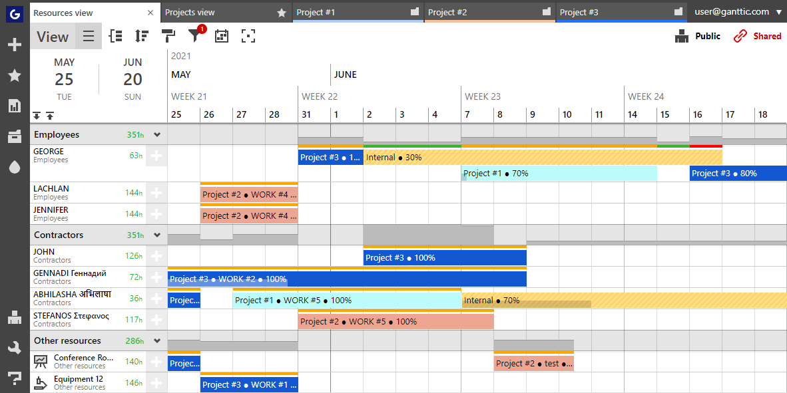

Resource planning tools are a secret weapon for project managers. With them, PMs can select the right resource for the right task, ensure their projects have enough capacity, and help plan future projects with precision. What’s not to love? Plus, in today’s world where we have enough on our plates, resource planning tools can help us get more out of less. Helping PMs to work smarter, not harder.
Resource management software and resource scheduling software have come a long way from colored spreadsheets, prone to human errors. That’s why I’ve decided to do a detailed review of the best resource management and scheduling tools to help you match your current project demand with the available resources. You’ll get an overview of each tool, along with screenshots, key takeaways, and a comparison chart at the end to help you make a more rational decision. Plus, there’s a rundown on a bit of theory. So without further ado, let’s take a look at the best agency resource management software out there.
This article will introduce you to some of benefits of resource planning. Demonstrating how your project management and work processes can improve once you implement this practice. Jumpstarting your success. And helping you outgrow your competitors with 5 of the best resource planning tools. Resource management is defined as the process of using the company’s resources (e.g., equipment, money, time, and employees) in the most efficient way. And in the scope of project management, it refers to the planning, tracking, and optimizing the utilization of resources for successful project completion.